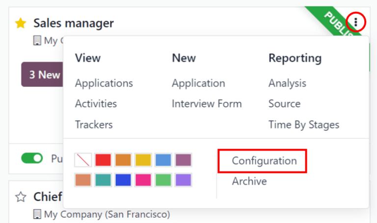
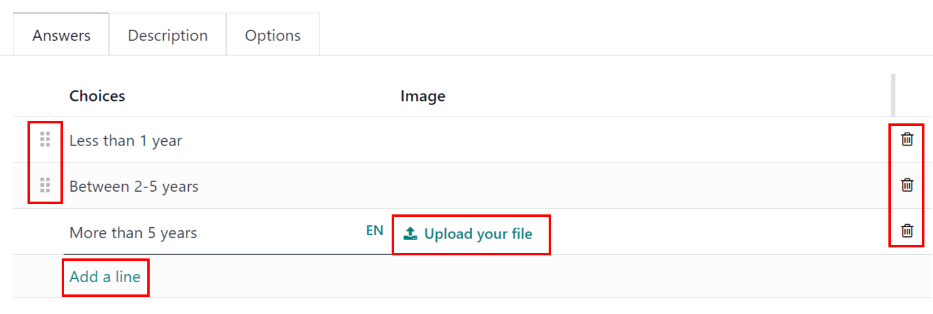

Job positions¶
In the default dashboard view, all job positions are shown, regardless of status. Current published positions with active applicants are shown, as well as job positions that have been created but have not yet been published.
Each job position is shown in an individual kanban card. If the job position is active and candidates can apply, then a Published banner will appear in the top-right corner of the card.
View submitted applications by clicking anywhere on a job position card.

Create a new job position¶
Create a new job position from the main Recruitment dashboard by clicking the New button in the top-left corner.
Then, a Create a Job Position pop-up window will appear. From here, enter the name of
the position (such as Sales Manager, Mechanical Engineer, etc.). When complete, click the
Create button to save the entry, or the Discard button to delete it.
Once the job position has been created, it will appear as a card in the kanban view on the main Recruitment dashboard.
Edit a new job position¶
After the job position is created, it’s time to enter the details for the position. Click on the ⋮ (three dots) icon in the upper-right corner of the relevant card to reveal several options, and then click Configuration to edit the details.
Enter the job description in the Job Summary tab. This information is what is visible to potential applicants when searching for available jobs.
Recruitment¶
All the basic information about the job position is listed under the Recruitment tab. None of the fields are required, but it is a good idea to provide at least a few details, such as where the job is located.
The fields can be filled out as follows:
Department: select the relevant department for the job position.
Job Location: select the physical address for the job.
Employment Type: select what type of position the job is, such as Full-Time, Part-Time, etc.
Company: select the company the job is for.
Target: enter the number of employees to be hired for this position.
Is Published: activate this option to publish the job online.
Website: select the website where the job will be published.
Recruiter: select the person who will be doing the recruiting for this role.
Interviewers: select who should perform the interview(s). Multiple people can be selected.
Interview Form: select an Interview form that applicants will fill out prior to their interview.
Contract Template: select a contract template that will be used when offering the job to a candidate.
Process Details section: this section contains information that is displayed online for the job position. This informs the applicants of the timeline and steps for the recruitment process, so they know when to expect a reply.
Time to Answer: enter the number of days before the applicant is contacted.
Process: enter the various stages the candidate will go through during the recruitment process.
Days to get an Offer: enter the number of days before the applicant should expect an offer after the recruitment process has ended.
Note
The Process Details section is a text field. All answers are typed in rather than selected from a drop-down menu. The text is displayed on the website exactly as it appears in this tab.
Create interview form¶
An Interview Form is used to determine if a candidate is a good fit for a job position. Interview forms can be as specific or general as desired, and can take the form of a certification, an exam, or a general questionnaire. Interview forms are determined by the recruitment team.
All interview forms must be created, there are no pre-configured forms in Odoo. To create an interview form, start from the recruitment tab of the Job Position form. In the Interview Form field, enter a name for the new interview form. As the name is typed, several options populate beneath the entry, Create (interview form name), View all, and Create and edit…. Click Create and edit…. and a Create Interview Form pop-up window appears.
Note
The option View all only appears if there are any interview forms already created. If no interview forms exist, the only options available are Create (interview form name), and Create and edit….
First, enter a name for the form in the Name field. This should be indicative of when the form should be used. For example, is the form specific to a job position, or is it a general form that can be used for all recruitment scenarios?
Next, select what kind of interview form is being created. The default is Custom, which is pre-selected. The various options are Survey, Live session, Assessment, Custom, and Appraisal.
Then select the person responsible for the form from the drop-down menu for the Responsible field.
If desired, an image can be added to the interview form. Mouse over the camera icon on the far right and a ✏️ (pencil) icon appears. Click the ✏️ (pencil) icon and a file explorer window appears. Navigate to the desired image file, then click Open to select it.

Questions¶
In the Questions tab, click on Add a section to add a section to the form. A line appears, and a section heading can be entered. When complete, click off the line, or press enter to lock in the new section on the form.
Next, click Add a question to add a question to the section. A Create Sections and Questions pop-up window appears where the question details are entered. Type out the question in the top line.
There are several Question Types to choose from:
Multiple choice: only one answer: a multiple choice question that only allows the candidate to select one answer
Multiple choice: multiple answers allowed: a multiple choice question that allows the candidate to select multiple answers
Multiple Lines Text Box: allows the applicant to enter several lines of text
Single Line Text Box: limits the applicant to only a single line of text
Numerical Value: only allows a number to be entered
Date: a calendar module is presented to select a date
Datetime: a calendar module and a clock icon is presented to select a date and time
Matrix: a customizable table that allows the candidate to choose an answer for each row
After selecting a question type, a sample question appears in gray. This represents how the question will be displayed to applicants.

Questions and sections can be reorganized. Move them by clicking and dragging individual section headings or question lines to their desired position(s).
Sections are indicated by a gray background, while questions have a white background.

Answers¶
If Multiple choice: only one answer, Multiple choice: multiple answers allowed, Single Line Text Box, or Matrix is selected for the Question Type, an Answers tab appears beneath the question. If another question type is selected, the Answers tab remains hidden from view.
For both the Multiple choice: only one answer and Multiple choice: multiple answers allowed question type, the answers are populated in the same way.
First, in the Answers tab, click Add a line. A line appears, and an answer can be entered. After typing in the answer, click off the line, or press enter to lock in the new answer on the form and have another answer line appear.
If desired, an image can be attached to the answer. Click on a line to select it, and an Upload your file button appears on the right side. Click the Upload your file button and a file explorer window appears. Navigate to the image file, select it, then click Open to select it.
Repeat this for all the answers to be added for the multiple choice question. The answers can be rearranged in any order. To move an answer, click on the six small squares on the far left of each answer line, and drag the answer to the desired position. The order the answers appear in the form is the order the answers will appear online.
To delete a line, click on the 🗑️ (trash can) icon on the far right side of the answer line.
If the Single Line Text Box question type is selected, only two checkboxes appear in the Answers tab:
Input must be an email: activate this option if the answer must be in the format of an email address.
Save as user email?: this option appears if Input must be an email is selected. This saves the email entered on the form as the user’s email, and will be used anytime Odoo contacts the user via email.
Save as user nickname?: activate this option to populate the answer as the user’s nickname. This is stored and used anywhere Odoo uses a nickname.

Sometimes, a question is asked that does not fit a standard answer format, and is best suited for a matrix. For example, asking an applicant what is their availability to work compared to the various shifts is a perfect question for a matrix format. In this example, an applicant can click on all the shifts they are available to work.
For a Matrix question type, there are two sets of data that need to be input. The rows and columns must both be configured. The columns are represented by the Choices section, while the rows are configured in the Rows section.
The method for populating both sections is the same. In the Answers tab, click Add a line in either the Choices or Row section. A line appears, and an answer can be entered. After typing in the answer, click off the line, or press enter to lock in the new answer on the form and have another answer line appear. Repeat this for all answers for both the Choices and Rows sections.
This is an example matrix that asks an applicant what shifts they are available to work on Saturdays and Sundays, either morning, afternoon, or evening.¶
Description¶
Enter any information that may be helpful to an applicant. This description will appear for this specific question only, and therefore should be question-specific and not generalized.
Options¶
To view the options that are available to set for a question, click on the Options tab. The Layout, Constraints, and Live Sessions sections are universal for all Question Types, while the Answers tab is specific to the Question Type selected, and changes based on the selection.
Answers¶
Multiple choice: only one answer and Multiple choice: multiple answers allowed: a Show Comments Field option appears. Activate the option to allow the applicant to answer the question by typing in an answer (or comment). A Comment Message and Comment is an answer field appear if activated. Enter the text to appear in the Comment Message field. This should be helpful to the applicant, such as
If other, please specify. Last, if the comment should be logged as the applicant’s answer, activate the box.Multiple Lines Text Box: a Placeholder field appears. Enter any text that should appear with the question to help clarify how the applicant should answer.
Single Line Text Box and Numerical Value: a Validate entry option appears. Activate this option if what the applicant enters must be a numerical value, and needs to be verified. The answer can only be verified if it is a numerical entry. When activated, several other options appear. Enter the values for the Min/Max Limits in the two fields. Next, enter the text that appears when the answer given does not fit within the designated minimum and maximum parameters. Last, enter any text in the Placeholder field to provide any additional information or directions to assist the applicant.
Date and Datetime: a Validate entry option appears. Activate this option if the applicant’s answer needs to be verified. When activated, several other options appear. Enter the date ranges for the Min/Max Limits in the two fields. Click on a field, either the minimum or maximum, and a calendar appears. Select the dates for the corresponding fields. Next, enter the text that appears when the answer given does not fit within the designated minimum and maximum dates. Last, enter any text in the Placeholder field to provide any additional information or directions to assist the applicant.
Matrix: the first option that appears is Matrix Type. Select either One choice per row or Multiple choices per row using the drop-down menu. The next option is Show Comments Field. Activate the option if there should be a comment displayed to the applicant. If activated, a Comment Message and Comment is an answer field appear. Enter the text to appear in the Comment Message field. This should be an instruction helpful to the applicant, such as
If other, please specify. Last, if the comment should be logged as the applicant’s answer, activate the box.
Constraints¶
If the question is required to be answered by the applicant, activate the box next to Mandatory Answer. An Error message field appears, with some example text in gray (This question requires an answer). Enter the message that should appear if the applicant attempts to move on to the next question without answering this required one. The text should explain that the question must be answered.
Layout¶
If the question should only appear if a previous question is answered in a specific way, activate the Conditional Display option. A new Triggering Question field appears. Using the drop-down menu, select the previous question this new question is linked to. Once a previous question is selected, a Triggering Answer field appears. Select the answer that must be selected in order for the new question to appear.
Example
To further illustrate a triggering question, the following is an example that is applicable to
recruitment. The question, Do you have experience with managing a sales team? is already
added. A new question is then added, How many years of experience?. This question should only
appear if the applicant selected Yes to the question Do you have prior experience managing a
sales team?.
To properly configure this example, activate the Conditional Display option. Then,
select Do you have experience with managing a sales team? as the Triggering
Question. Then, select Yes for the triggering answer.

Live Sessions¶
If the question is for a live session, activate the Question Time Limit option. A seconds field appears. Enter the amount of time allotted for the applicant to enter the answer, in seconds.
Options¶
Next, configure the various options for the interview form. Click the Options tab to view all the options to configure, by category.
Questions¶
Pagination: choose how the questions should be displayed.
One page per question: display a single question on each page.
One page per section: display each section with the corresponding questions on an individual page.
One page with all the questions: display all sections and questions at the same time.
Display Progress as: choose how to display the percentage of questions remaining to answer. This option only appears if either One page per question or One page per section is selected for Pagination.
Percentage left: display the remaining amount in a percentage (%).
Number: display the remaining amount in a numerical value.
Question Selection: choose which questions are presented.
All questions: display the entire form, with all questions form all sections.
Randomized per Section: display only a random selection of questions from each section.
Back Button: activate this option if the applicant is able to click a back button to go back to previous questions.
Note
Although it is a selectable option, the Randomized per section option should only be used if receiving partial information/an incomplete survey from every applicant is acceptable to the business.
Time & Scoring¶
Survey Time Limit: activate this option to limit the time allowed to complete the form. When selected, a field to enter the minutes appears next to the checked box. Enter the time (using an XX:XX minute/second format) in the field.
Scoring: choose how the questions should be scored.
No scoring: select this option to not score the form.
Scoring with answers at the end: select this option to score the form and display the correct answers for the candidate when they are finished with the form.
Scoring without answers at the end: select this option to score the form but not display the answers to the candidate.
Required Score (%): this option appears if one of the scoring options was selected. Enter the percentage the candidate needs to pass the exam (example, 80.00%). The entry should be written in an “XX.XX” format.
Is a Certification: activate this option if the form is a certification exam. When activated, a drop-down menu appears next to the checkbox. Select one of the default formats for the PDF certificate that will be sent to the candidate after completing the certification exam. Click the Preview button to view an example of the PDF certificate.
Certified Email Template: if the Is a Certification box is activated, a Certified Email Template appears. Select the email template from the drop-down menu that is to be used when the applicant passes the test. Click the External Link icon to the right of the email template to preview the email.
Participants¶
Access Mode: specify who can access the exam. Either Anyone with the link or Invited people only.
Require Login: activate this option to require candidates to log in before taking the exam, whether they have a valid token or not.
Limit Attempts: if there is a limit to how many times the exam can be taken, activate this box, then enter the maximum attempt number in the field next to it.
Live Session¶
Session Code: enter the access code that will allow the viewers into the live exam session.
Session Link: the link appears in a box next to the Session Link option. Click the Copy button to copy the link.
Reward quick answers: if the exam is to be taken live, activate this option to award more points to participants who answer quickly.
After all fields have been entered, click the Save button to save the changes, or click Discard to delete the changes.

Description¶
When the applicant begins the survey, the text entered in this tab appears at the top of the survey page. Enter any information or descriptions that would be helpful to the applicant.
End Message¶
After the survey is complete, the message entered in this tab is displayed for the applicant.